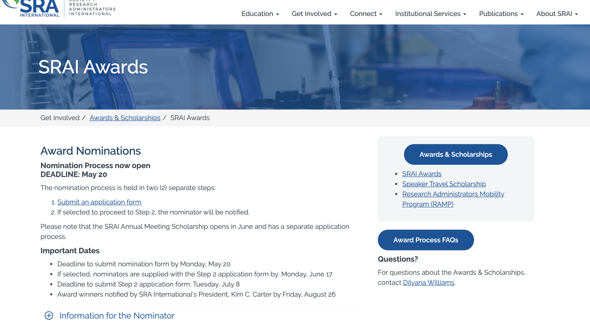
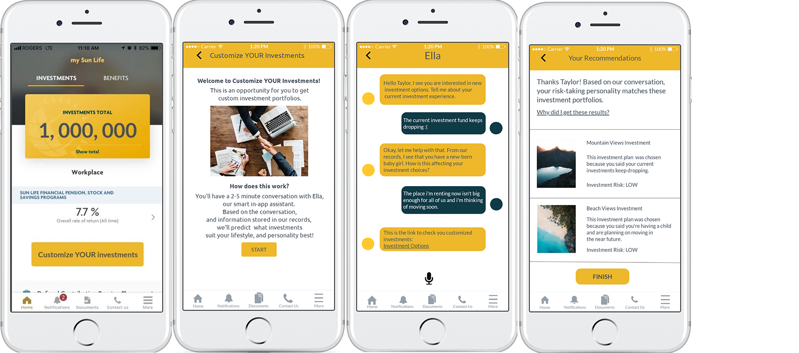

Julia Bernoski
I am a Front-end Web Developer with a passion for design and content migration. I enjoy being able to turn ideas into fully functional websites. I started off wanting to become a back-end developer but have learned to really love using my design eye to make sites look pretty.
My Daily Inspiration:
"Life isn't how to survive the storm; It's about how to dance in the rain."
Experience
Content Coordinator
I am in charge of taking content from a clients old website and migrating it to their new website in developement. Content Migration calls for being able to identify small details such as alt tags for images and links, as well as choosing what kind of layout is best for specific content. I've also worked on Content Maps, which is documenting a clients old website, and seeing where everything will go on the new website.
Sales Associate
I am in charge of fitting rooms, where I help customers find what they are looking for, and make sure they feel comfortable in our clothes. I found this job has helped me become more personable with customers, and built my communication skills which is a neccassery skill to have for my career path as a Web Developer.
Innovation Web Application Developer
I was a helping hand for updating their internal website, by adding in promotional banners for events, adding and removing employees from their databases, as well as creating a calendar for their New Grads to see and use. During my time at Sunlife I was also able to take part of their quarterly Hackathon. I got to create a prototype that would implement AI Technologies into the services provided by Sunlife. For the Hackathon, I also got to help out with marketing by creating Posters and Banners that would be used on their internal site as well as be posted throughout their building locations.
Cashier
I had to ring out customers products by using Freshco's Computer System. I also had to help customers find what they were looking for by guiding them in the right direction. I found this job was helpful for developing my communication skills, as sometimes when I would end up in a disagreement with a customer, I had to find the right way to explain the situation in a way that would solve both their problem and mine.
Education
Conestoga College
GPA: 3.6
Within my program I've gotten the chance to build my skills on different programming languages such as HTML, CSS, Javascript, C#, and Java. I've also had the chance to learn how to design page layouts using Adobe Photoshop, and create animations using blender.
Skills
- WordPress
- Javascript (react & node)
- HTML and CSS
- C#
- Visual Studios
- SQL Server Developer
- ASP.NET MVC
- Java
- Neatbeans
- Webstorms
- Marvel App
- InVision
- Adobe Photoshop
- Adobe Indesign
Interests
Apart from being a web developer, I am spend most my time going around to different collectible expos and conventions. I am a huge collector of Funko Pops, as it can be such a fun time finding funko pops for all my favourite characters in TV Shows and Movies.
When there aren't any collectible expos and conventions going on you can catch me going to concerts for all my favourite artists such as Taylor Swift and Tyler Shaw. I love music and the thrill of seeing albums I adore come to life on stage is unlike any other thrill. Most people know me for my love for Taylor Swift, as she is such a huge inspiration to me, and I've been a fan of hers for almost a decade.
Fun Fact: Since I have loved Taylor for as long as I have, I was invited to the reputation Secret Sessions back in October 2017. It was hosted at her Rhode Island Beach House, where I got the chance to meet her, as well as listen to her 6th studio album before it was released to the public. Meeting her and her family was such an amazing experience, she was the sweetest and I'm so thankful I got to be apart of that very special moment.
Awards & Certifications
- Participant of Sunlife Financial's Digital Solutions Hackathon October 2018
- Dean's Honor Roll for IT Innovation and Design 2017
- Highest Overall Grade for Computer Engineering 2015
Projects
Work Project for Sunlife Financial
During my co-op term at Sunlife, I found it was difficult connecting with other co-op students since there are so many departments, and we only had the first day orientation to connect with each other. I came up with an app that could help connect co-ops better, as well as give them a tool to help them navigate through all things Sunlife Financial. View Prototype »

Work Project for eConverse Media
A part of my job at eConverse Media is migrating content and choosing page layouts that best display content. One of the first projects I worked on was SRAI International where I had my first chance to migrate content. One of the pages I got to work a lot on was for the Award Nominations Page. On this page, I got to add in proper titling, accordions, and a syndicated menu. SRAI International is a good example of the work I do for eConverse, as I've had the chance to look and and edit each page on the site. View SRAI International's Website »
Innovation Workshop at Sunlife Financial
During my time at Sunlife Financial I got the chance to be apart of a Innovation Workshop and for this particular workshop the topic was "Artificial Intelligence". My group came up with the idea of using a virtual assistant to help out customers figure out what kind of insurance they should look into. By chatting with "Ella" and answering a few questions, a couple options for insurance plans would be given to the user. View Prototype »
